Civitatis.com -Guias locales
Viaja y descubre las ciudades más bellas del mundo | Traveler
Planificar tu viaje con Google Maps será más fácil gracias a sus nuevas herramientas Google Maps lanza tres novedades que se convertirán en tus mejores amigas a la hora de planificar viajes: Immersive View, Indicaciones visibles y Recientes
Google.com/travel planificador viajes
Wanderlog Planificador d'viaje App
Airalo: eSIM Viajes e Internet App
permite usar distintas eSIMs para que el coste de datos de tu roaming no aumente
NoFilter: Photo Spots App
ayuda a encontrar los lugares más naturalmente fotogénicos del destino
Traductor de Google App
podrás usar la cámara del teléfono para traducir de forma instantánea señales, etiquetas o menús
Registro de ciudadanos viajando al extranjero
Viajarsano.com -enfermedades tropicales
Programa de Exención de Visado | Embajada de los Estados Unidos ESPAÑA
Husos horarios
Enchufes segun pais y tipo
Orientacion por brujula
Led lenser magic -linternas LED
Franceguide.com
Towd.com -oficinas turismo mundo
Flightradar24.com -mapa tiempo real aviones volando Madrid
Flightradar24.com -mapa tiempo real aviones volando Madrid
Radarbox24.com -mapa tiempo real aviones volando Madrid
ADS-B Exchange - tracking 5490 aircraft -mapa tiempo real aviones volando
vesselfinder.com -mapa tiempo barcos navegando (en details ver IMO)
Mapa de contraseñas Wi-Fi de todos los aeropuertos del mundo
Passwords From Airports And Lounges Around The World - Google My Maps
Opodo.es - tour lineas aereas Europa
Aerolíneas de bajo coste -supersaver.es
eDreams -seleccionar vuelos
Atrapalo.com -vuelos+Hotel
La guía definitiva del compartimento de equipaje en cabina
Cómo destaponar los oídos en el avión, según los expertos
mascar chicle antes del despegue y el aterrizaje
Grimaldi Lines Barcos para Italia, Cerdeña, Marruecos
Grandi navi veloci
MarineTraffic: Global Ship Tracking Intelligence | AIS Marine Traffic
Myshiptracking.com realtime AIS Vessel Tracking Vessels Finder Map - ship tracker
Vesselfinder.com Rastreo de buques AIS de tráfico marino gratuito
Air Europa grupo turístico Globalia, miembro alianza SkyTeam
Hilo de los pueblos más surrealistas de la Tierra @MatiasSchrank
Hilo de los pueblos más surrealistas de la Tierra @Jefersonnasa_
Viajaporlibre.com
Labrujulaverde.com
Lugaresconhistoria -facebook.com
Viajes.101lugaresincreibles.com
101lugaresincreibles.com
Diario del Viajero - Crónicas de viajes, vacaciones y turismo
Wikitravel.org -guias ciudades del mundo
La vuelta al mundo arquitecto en 30 fotografías Jot Down Cultural Magazine
Laura @ilona80536856
12 tesoros geológicos por descubrir (además del Gran Cañón) traveler.es
Los cañones y desfiladeros más bellos de España traveler.es
18 lugares recomendados por fotógrafos y bloggers para visitar en otoño - machbel
Elviajero.elpais.com
Muchoviaje.com
Revistaiberica.com
Viajar.com
Losviajeros.com -foro viajes
Diariodelviajero.com -blog viajes
Las estaciones de tren más bonitas del mundo
Agencias viajes:
Circuitos Danubio del Sur Web
Calle Dr. Pérez Domínguez, 6, Nº 3, Villaverde, 28021 Madrid Teléfono: Juan 917 95 31 16
Circuitos Danubio del Sur Puentes
Viajes Nicolas Viajes de la Comunidad de Madrid
Viajes El Corte Inglés
Viajes Marsans
Halcon Viajes
Halcon Viajes Paseo de las Delicias, 68 | 915276666
Llámanos al 900 80 20 20
Lunes a Viernes de 9:00 a 20:30, Sábados y Domingos 10:00 a 19:00 - Excepto Festivos Nacionales
Email de Atención al Viajero reservas@halconviajes.com
Bthetravelbrand.com
Amadeus.net
Voyage-prive.es -Vacaciones de alta gama, estancia de lujo
Hoteles.:
Hoteles más bonitos del mundo
Talonario_Hotelplus
Talonario_Hotelplus -opiniones
Muchoviaje.com
Muchoviaje.com -foro
Booking.com -reserva Hoteles
Portugal.:
Quinta da Regaleira, em Sintra, Portugal -Video
Quinta da Regaleira, em Sintra, Portugal -El Palacio del Misterio
Quinta da Regaleira, em Sintra viaje al corazón | Traveler
Sintra (Portugal)-PALACIO REGALEIRA: La torre invertida
Dom Jose Beach Hotel praia em Quarteira (Algarve)
Foro Portugal: SUR DE PORTUGAL -Algarve
Un viaje gastronómico para saborear el Algarve

Ponta da Piedade Algarve

Cueva de Benagil Algarve
Praia Do Beliche Algarve
Farol do Cabo de Sao Vicente Algarve
Una escapada romántica en Lisboa: 'Meu coração bate feliz quando te vê' | Traveler
Lisboa en conserva | Traveler
Lisboa en 48 horas | Traveler -youtube
Elvas pasado Badajoz
Santarém: la ciudad medieval donde escaparse por amor al arte | Travelerz
48 horas en Oporto
¿Qué ver en Oporto?
Estación de Porto de São Bento, Oporto
Oporto qué ver en Oporto
Tres días en oporto instagram.com
Estación de Porto de São Bento, Oporto
Comida típica de Portugal: 17 platos imprescindibles
Francia.:
París.:
¿Cuál es la mejor época para viajar a París?
La mejor época para viajar a París es la que rodea al verano. Los meses previos, es decir, abril y principios de mayo, y los meses posteriores, septiembre y octubre, tienen las temperaturas agradables y la menor afluencia típicas de la temporada baja. “No llega a hacer un calor asfixiante pero los días siguen siendo cálidos” -traveler.es
Torre Eiffel
Tullerías
Puente Alexandre III
Teatro Du Châtelet
Place Vendôme
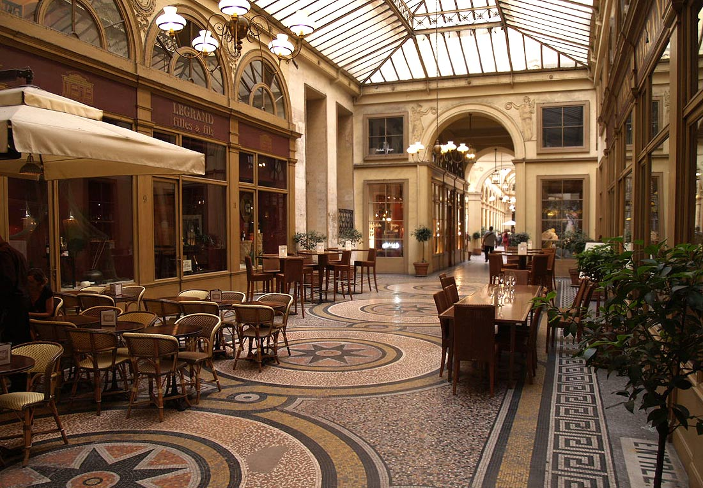
Galería Vivienne
Pasajes cubiertos Se trata de pasajes que discurren por el interior de un edificio, atravesándolo de parte a parte, con el techo acristalado, y llenos de tiendas, restaurantes, y establecimientos de todo tipo. El primer pasaje cubierto abrió en el año 1799
Un siglo de Art Déco el estilo que conquistó el mundo Origén París | Traveler
Viajes a París Iberia Vuelo más hotel Guía de Viaje
Foro Paris Losviajeros.com
Louvre foto aerea
Oficina de Turismo de París
50 cosas que hacer en París… Sucumbir ante la ciudad de la luz en Montmartre, en Le Marais, en Saint-Germain-des-Prés en las 50 cosas que hacer en París… hoy y siempre.
27 cosas insólitas para hacer en París una vez en la vida | Traveler
13 cosas que deberías saber antes de viajar a París
Basílica del Sagrado Corazón (París)
La basílica del Sacre Coeur de París Una joya arquitectónica construida sobre una colina sagrada
Iglesia católica de París, construida en 1875-1914 por el arquitecto Paul Abadi en estilo romano-bizantino, situada en la cima de la colina de Montmartre, en el punto más alto de la ciudad.
Basílica del Sacre Coeur de París | basílica de Arquitectura bizantina
Basílica del Sagrado Corazón de Montmartre, París
Iglesia Notre Dame de Loreto
Torre Montparnasse
Iglesia de Saint-Sulpice googlemaps
Sainte Chapelle (París) | joya de la arquitectura gótica y su construcción a base de vidrieras resulta muy peculiar
Sainte Chapelle (París) Esplendor Gótico periodo radiante


Opera Garnier, Paris tiqets.com
Beaux Arts | arquitectura hace referencia al estilo arquitectónico clásico académico, que fue enseñado en la École des Beaux Arts de París (Escuela Nacional Superior de Bellas Artes de París), así también es conocido ampliamente como academicismo francés
Ejemplos.: Opéra Garnier. Palais du Trocadéro. Gare d'Orsay.
El conocido ingeniero estructural español, Rafael Guastavino (1842-1908) famoso por sus bóvedas con ladrillos vistos y mortero, conocidas como trabajo en azulejo Guastavino diseñó bóvedas en docenas de edificios Beaux-Arts en Boston, Nueva York y otras ciudades
Puente Alejandro III. París propio del estilo Beaux Arts de la Tercera República Francesa, que cruza el río Sena a su paso por París y une la explanada de Los Inválidos con el complejo monumental formado por dicho puente, el Grand Palais y el Petit Palais
Puente Alejandro III. París wikipedia.org
Panteón (1764-1790) monumento destinado a honrar a los grandes personajes de la historia de Francia, excepción hecha de los militares que se suelen enterrar en Los Inválidos. Obra del arquitecto Jacques-Germain Soufflot (1713-1780). Neoclásico
Carcassonne [Francia] Una imponente ciudadela medieval 101 Lugares increíbles.com
Frases
Bonne soir Buena noche
Italia.:
Italia restaura las ruinas de Pompeya tras daños y robos
Rincones Secretos del Mediterráneo: Portovenere, la puerta a las Cinque Terre
Los pueblos más bonitos de Italia
26 fotos que inspiran un viaje a Italia
Los 15 mejores platos de pasta de Italia
Hasta los suelos son arte
Venecia -virtual
Catedral de Siena
Cómo visitar Catedral Duomo de Siena horarios, precios entradas | Viajar a Italia
Florencia | Salón Cinquecento Palazzo Vecchio
Florencia | La Capilla de los Príncipes dentro de las Capillas de los Medici
Florencia -Visitas
Florencia -48 horas en Florencia | que ver y comer
Florencia Qué ver en Florencia, la joya italiana del Renacimiento

Florencia Las puertas que Ghiberti ideó para el Baptisterio de San Juan en Florencia
Durante siglos, el monumento más querido por los florentinos fue su baptisterio de San Juan, junto a la blanca fachada del Duomo. Hasta los años 30 del siglo XX, Dante Alighieri, Donatello y todos los recién nacidos en Florencia fueron bautizados en este baptisterio románico cuya historia se remonta a los primeros siglos del cristianismo.
La Plena Edad Media significó una época de bonanza para Florencia. El viejo baptisterio junto a la catedral fue renovado en el siglo XI con mármoles blancos de Carrara y verdes de Prato, y la cúpula sobre la piscina bautismal se recubrió con mosaicos de pan de oro que brillan gracias a los haces de luz que penetran a través de estrechos óculos.
Florencia | Loggia dei Lanzi
Florencia | El patio interior del Palazzo Vecchio
Florencia | Renacimiento | Miguel Ángel
Florencia Una de las obras arquitectónicas más fascinantes de Florencia es el Corredor vasariano, un pasaje elevado que permitía a los Médici moverse libremente del Palazzo Vecchio al Palazzo Pitti, atravesando el Arno sobre el Ponte Vecchio.
Parque Arqueológico de Pompeya
Nápoles: cosas que ver y hacer
Nápoles | Museo Capilla Sansevero escultura de mármol Cristo Velado
Nápoles por primera vez: guía para visitar la ciudad más auténtica de Italia
Nápoles | Palacio Real de Caserta El palacio más grande del mundo que es Patrimonio de la Humanidad y fue encargado por el rey Carlos VII de Nápoles, quien más tarde sería Carlos III de España Fue inspirado en el palacio de Versalles y es máximo exponente del barroco italiano
Génova 8 planes para una escapada breve (pero intensa) | Traveler
San Marino microestado escondido en Italia
Roma.:
Visita Roma.: Notas mias
Roma por primera vez
Civitatis.com -Guias locales Roma
Roma viaje virtual a la Ciudad Eterna
Civitatis.com -Guias Roma
Roma -Coliseum
Roma -Coliseum curiosidades
Roma | Coliseo 7 Curiosidades de la Historia del Coliseo de Roma
Roma -La Fontana di Trevi reabre al público pero con limitación de aforo
Edificio Vittorio Emanuele II
Las Termas de Caracalla viajaporlibre.com
Roma Hogar de los Dioses -viaje programado pausanias.es
Roma enroma.com
Roma monumentos-atracciones
Roma Palatino
Roma San Pedro in Vincoli | Escultura Moisés de Miguel Angel
Roma 21 de abril: la luz del sol ilumina el Panteón de Agripa
Panteón de Roma ¿un gigantesco reloj solar?
Roma Mausoleo de Adriano
Roma "Ángeles Desconocidos" escultura en la Plaza de San Pedro
La inauguró el Papa Francisco . Todo un símbolo de acogida, de solidaridad y de esperanza.
Roma "Ángeles Desconocidos" escultura en la Plaza de San Pedro del Vaticano
El autor de la obra es el artista canadiense Timothy Schmalz
Paseo por la Roma Imperial del siglo IV d.C.
Gloria de Roma | Concurso profesional. Fotografía finalista
Columna Trajana Turismo Roma
Columna Trajano La Columna de Trajano acaba de cumplir 1912 años. Este impresionante monumento fue inaugurado el 12 de mayo del 113 d.C. en el Foro de Trajano diseñado por Apolodoro de Damasco narrando en más de cien escenas la victoria del emperador en las guerras dacias (101-106 d.C.)
Columna de Marco Aurelio (Antonina) Turismo Roma
Columna Marco Aurelio Columna de Marco Aurelio y Faustina que se encuentra en la Piazza Colonna de Roma fue erigida por Cómodo en memoria de su padre y su madre alrededor del año 180 d.C.
La columna se inspiró en su predecesora más famosa, la Columna de Trajano que se instaló, también en Roma, en el año 113 d.C.
La columna tiene actualmente 39 metros de altura, pero otros 7 metros de la estructura de la base permanecen bajo tierra; la parte más baja nunca ha sido excavada.
Marco Aurelio (161-180) Luces y sombras
Basamento de la Columna de Antonino Pio
Foro romano
Plaza navona
Panteón de Agripa
Museo Villa Borghese CAM: Italia (entrada por Roma) (2022) Desde 965 € (ver recorrido)
5 Museos de Roma que no te puedes perder.:
Galerias Borghese
Galeria Doria Pamphilj
Galeria Colonna
Museos capitalinos
Museos vaticanos
Civitatis.com -Roma -guias locales
Templo de Saturno, en el Foro Roma -wikipedia.org
Templo de Saturno, en el Foro Roma -Foto -nationalgeographic.com
Roma Ciudad | Arte en Roma | Columna Marco Aurelio
‘Emily en Roma’: los lugares que visita Emily Cooper en la Ciudad Eterna (y los que podría haber visitado) | Traveler
Emily Paris y este es uno de ellos que es la Piazza Matthei
Vaticano
Vaticano --capilla sistina -virtual
Vaticano -FACUA advierte de una web que simula ser la oficial de los Museos Vaticanos para vender entradas a un precio superior
Roma Ciudad | Arte en Roma | El Vaticano
Palacio Zuccari Turismo Roma
Iglesia circular | uno de los secretos mejor guardados de Roma

Palacio Doria Pamphilj disfrutaroma.com

Palacio Doria Pamphilj italia.it/es
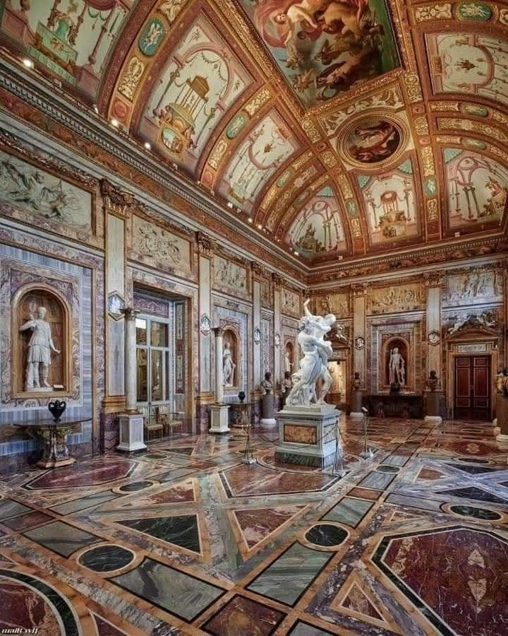
Galería Borghese El Salón de los Emperadores con el grupo escultórico La violación de Proserpina, la obra maestra de Bernini
La habitación lleva el nombre así por los bustos de pórfido y alabastro de los Doce Césares
Museo Villa Borghese en Roma borghesegallery.com
Museo Villa Borghese en Roma visitarroma.es

Gian Lorenzo Bernini 1598 elefante esculpido por su discípulo Ercole Ferrata según diseños de Gian Lorenzo Bernini

2. El Moisés | Miguel Ángel
Algunas de las esculturas más famosas de la historia fueron hechas en el Renacimiento y salieron de las manos de ese genio inigualable que fue Miguel Ángel
El Moisés, titánico y espectacular se encuentra en la iglesia menor de San Pietro in Vincoli y es de obligado visionado si vas a Roma
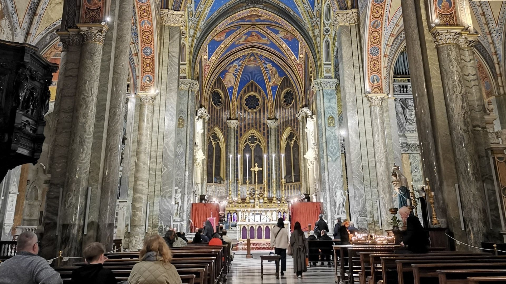
Santa Maria sopra Minerva: La basílica del juicio a Galileo
Galleria Doria Pamphilj ubicada en el Palazzo Doria Pamphilj en Roma, exhibe una impresionante colección de arte privada. Situado entre Via del Corso y Via della Gatta, su entrada principal está en Via del Corso.
La galería presenta obras maestras de artistas de renombre como Caravaggio, Tiziano y Rafael ofreciendo a los visitantes una visión de la grandeza de la historia y el legado artístico de la familia Pamphilj...
Galleria Doria Pamphilj Roma - Italia.it/es
Galleria Doria Pamphilj Entradas
El techo que ves reflejado en este espejo es completamente plano.
Esta obra maestra fue hecha en "3D" por el gran Andrea Pozzo quien pintó el grandioso fresco en 1685. Se encuentra en la Iglesia de San Ignacio de Loyola en Roma
Vaticano --capilla sistina -virtual
Cuba Web
Cuba Arte
Explora Mexico
Egiptologia
Egipto abre sus tumbas de manera virtual para recorrerlas sin salir de casa
Tesoro de Petra-Jordania(s.I aC)
África vista desde España
Turquia
La mezquita en Estambul que esconde una leyenda de amor
Japón.:
Viaje a Tokio: 15 cosas que deberías saber antes de hacer la maleta | Traveler
Nueva York:
Mapa de Nueva York: museos, rascacielos, parques, restaurantes, localizaciones míticas de películas
Foro Nueva York y Noreste de USA Losviajeros.com
Las mejores cosas gratis que hacer en Nueva York | Traveler
Nueva York vs. Mallorca
Museos de Nueva York: 14 visitas imprescindibles
Qué ver en Nueva York: imprescindibles en una primera visita Traveler
‘La Edad Dorada’: un paseo actual por la Nueva York de finales del siglo XIX
Ingeniero valenciano Rafael Guastavino | estación fantasma del Metro de Nueva York abandonada en 1945
Ingeniero valenciano Rafael Guastavino un valenciano en lo más alto de Nueva York
Museo Biblioteca Pierpont Morgan
En 1924 J.P. Morgan Jr. donó a la ciudad la maravillosa biblioteca que perteneciera a su padre, Pierpont Morgan el banquero más influyente de EEUU y voraz coleccionista.
Qué ver en Washington DC Traveler
Perú:
Cómo es Choquequirao, el "otro Machu Picchu"
Valle Sagrado: ‘Tupananchiskama’ | Traveler
Qué ver en Riga (Letonia) capital del Art Nouveau y Patrimonio de la Humanidad
diferencias entre el ART NOUVEAU y ART DÉCO
Londres.:
Londres escapada 4 días
Londres circuitosdanubiodelsur.es
Qué ver en Londres | Traveler
Itinerarios de Londres: Rutas por Londres con mapas GRATIS
Museos de Londres: 10 visitas imprescindibles | Traveler
15 reglas no escritas que debes saber antes de viajar a Londres | Traveler


Abadía de Westminster Curiosidades
Exteriores Slow Horses
Campos de Bunhill
Barbican Highwalk
Royal Exchange Building Londres
Mercado de Leadenhall
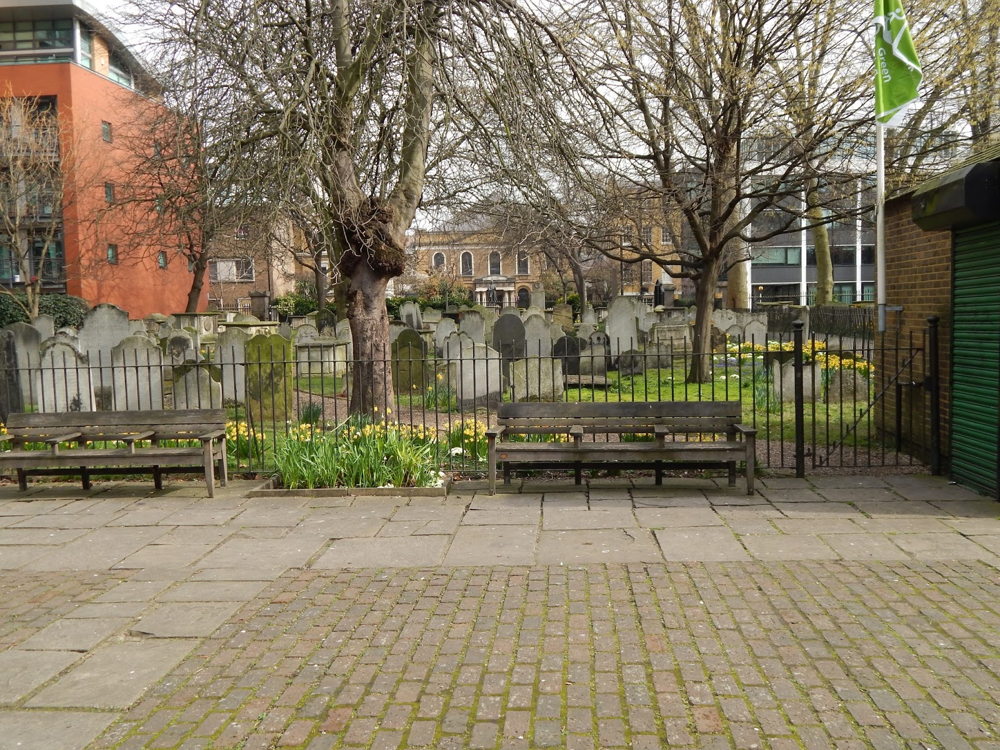
Campos de Bunhill" (Bunhill Fields) son un cementerio histórico en Londres, conocido por ser el lugar de descanso de muchos intelectuales y disidentes no conformistas británicos, como John Bunyan, Daniel Defoe y William Blake.
Ubicación:
Se encuentra en el norte de la City de Londres, cerca de Barbican y la estación de Old Street
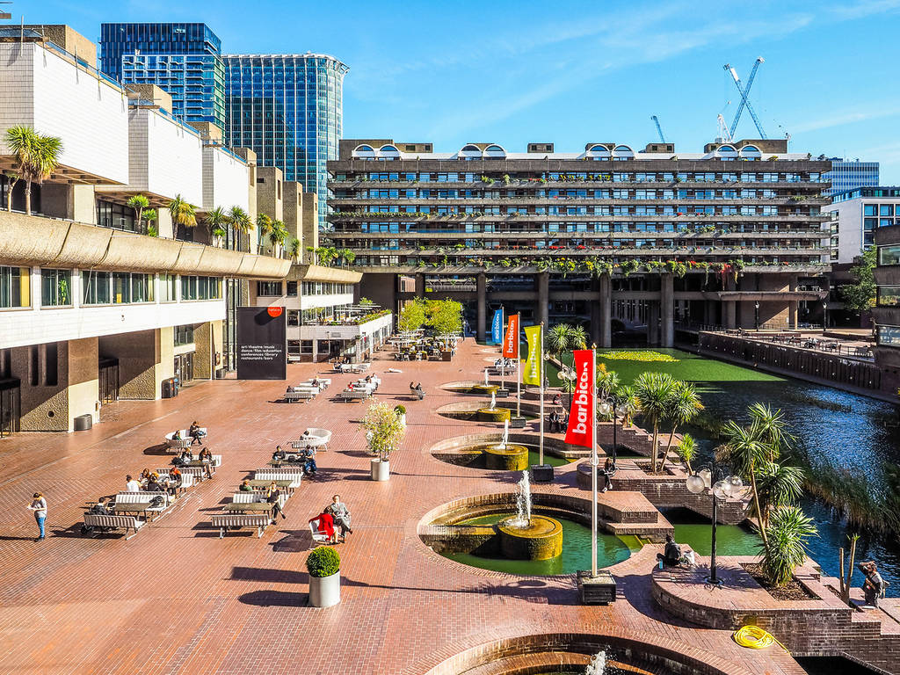
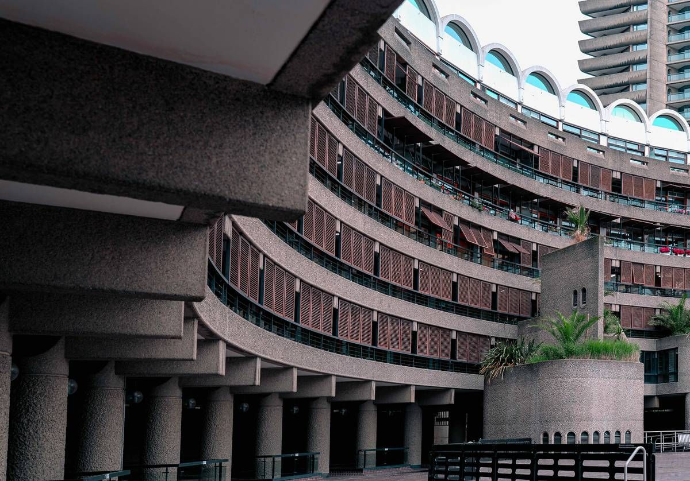
Barbican Highwalk edificio brutalista -exteriores SLOW HORSES


Guildhall (Barbican Estate) Fue casa consistorial de Londres
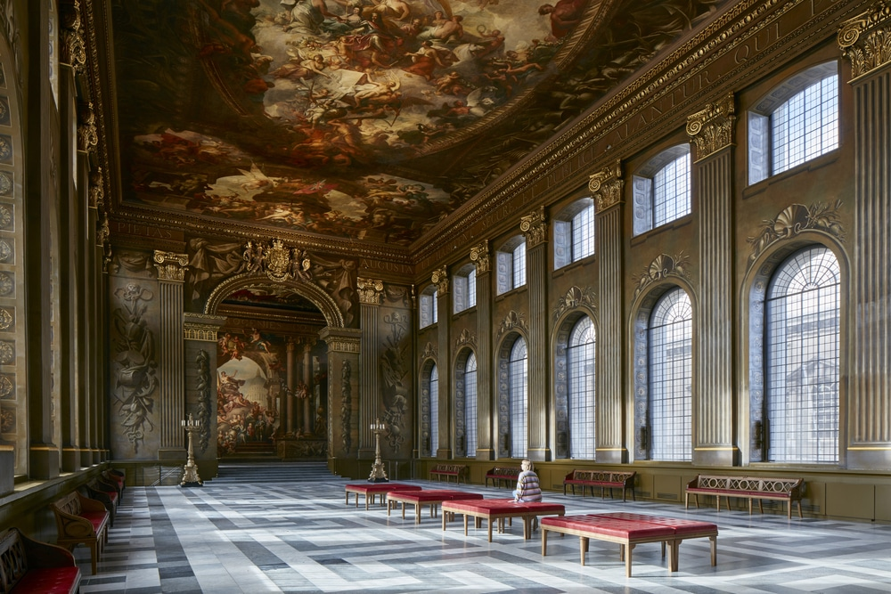
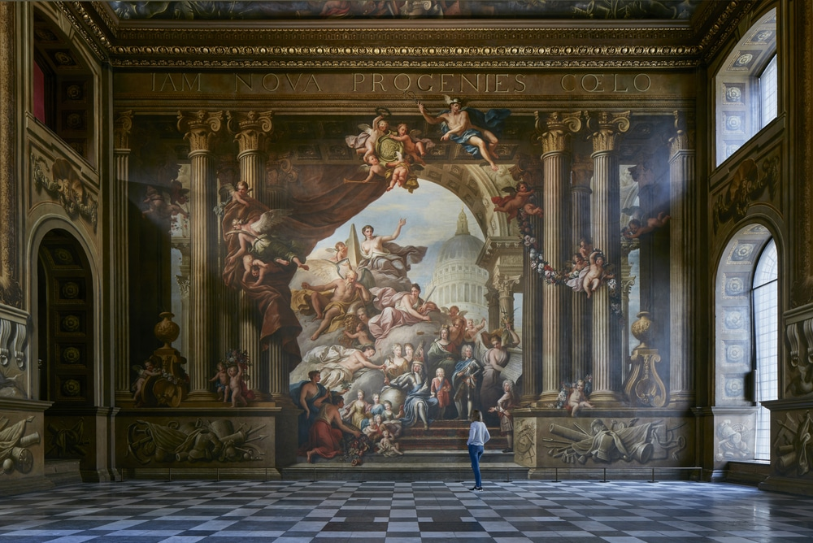
Old Royal Naval College
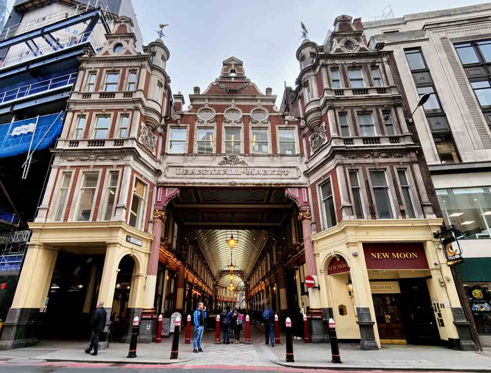
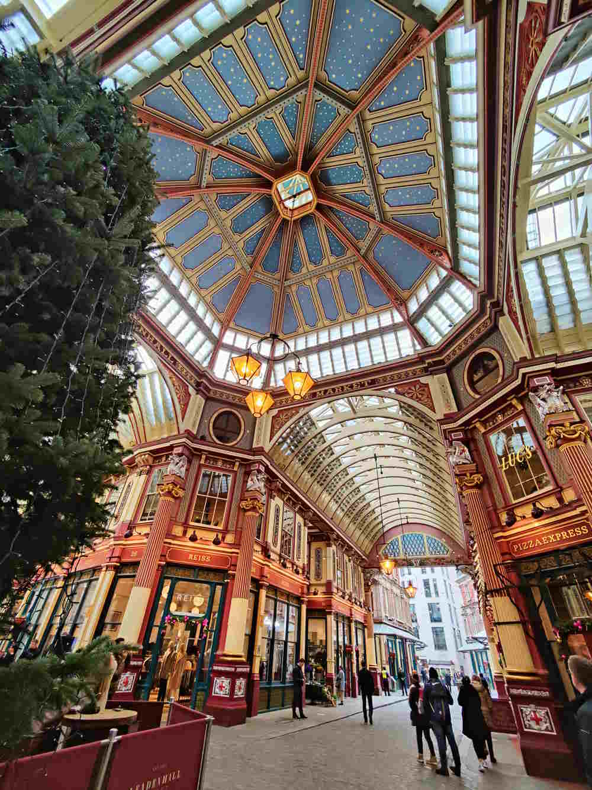
Leadenhall Market el mercado romano de Londres | QverLondres

Royal Exchange | Bolsa de Londres wikiepedia.en (inglés)

Royal Exchange | Bolsa de Londres wikipedia.es
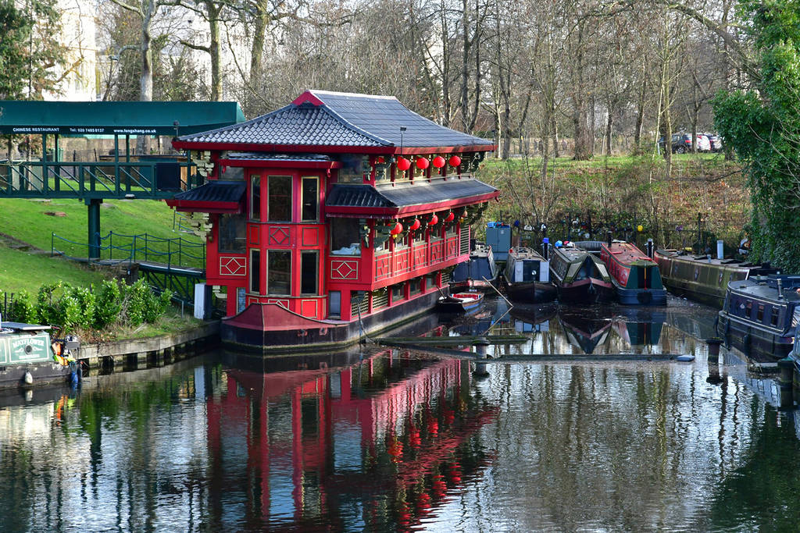
Feng Shang Princess exteriores SLOW HORSES
Restaurante flotante en Regent's Canal es un básico de Camden
Budapest:
Budapest (Hungría) escapada 4 días
Praga.:
Praga (República Checa) escapada 4 días
Praga (República Checa) Qué ver en Praga
Praga es kafkiana
Bruselas.:
Qué ver en Bruselas el corazón de Europa
Croacia.:
Split (Croacia) Visitar Split y su Palacio Diocleciano
Grecia.:
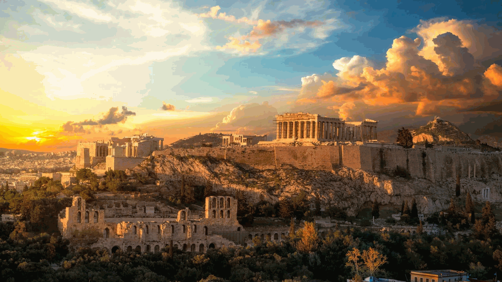
Atenas | frontón del Partenón Según la mitología griega, Atenas nace por una disputa entre dos dioses que querían que la nueva ciudad ostentase su nombre: Atenea y Poseidón
Ambos ofrecieron a los ciudadanos un presente, un lago salado por parte del dios del mar y un olivo para cultivar la tierra por parte de la diosa de la sabiduría.
48 horas en Atenas: guía para descubrir la capital griega más allá de la Acrópolis
Alemania
Nördlingen La ciudad de los diamantes. -youtube